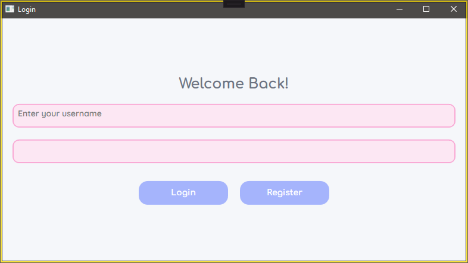
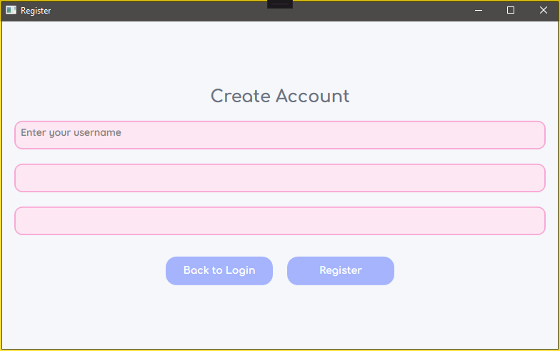
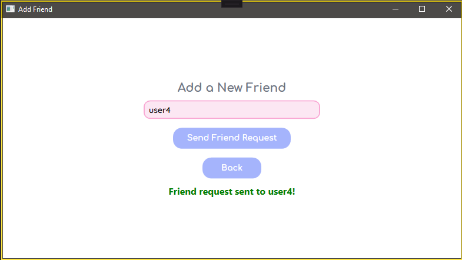
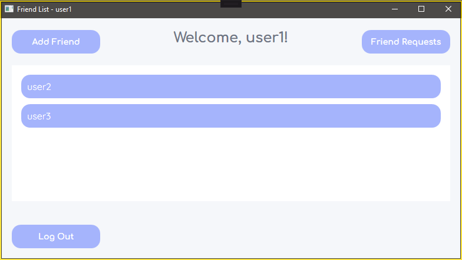
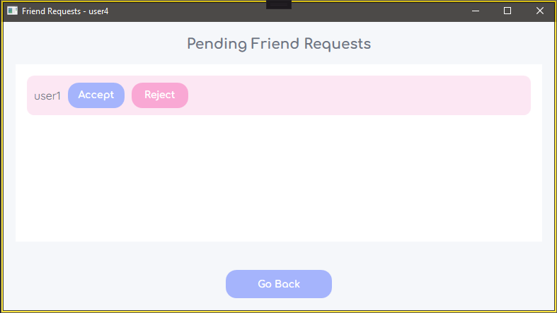
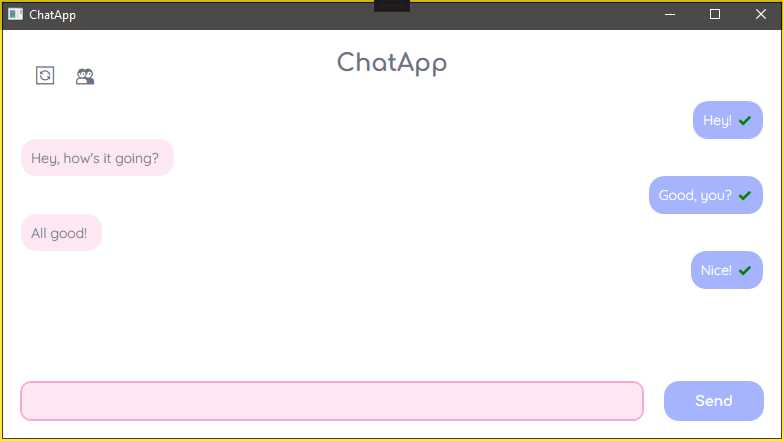
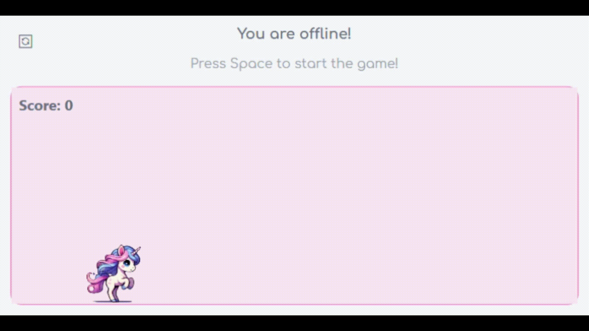

Introduction
Project Overview
ChatApp is a messaging application designed to provide a smooth user experience for chatting over the internet.
It uses Python FastAPI for the backend and C# WPF for the client-side interface. ChatApp allows users to send messages, delete messages, and retrieve their chat history. Additionally, the app includes a whimsical offline unicorn game that is activated when the server is unavailable.
Key Features
- User Authentication: Users can create an account, log in, and securely access their chat history.
- Chat History: ChatApp stores and fetches previous messages between users, displaying them in chronological order.
- Real-Time Messaging: Send and receive messages instantly when connected to the server.
- Offline Support: Messages are stored locally when the app is offline, and they sync with the server once the connection is restored.
- Message Deletion Sync: Delete messages locally, and they will be synchronized with the server once online.
- Offline Unicorn Game: A whimsical offline unicorn game is activated if the server is disconnected, ensuring users stay entertained.
- Whimsical UI: The user interface is designed with a playful, pastel color palette for a friendly and engaging user experience.
- Server Responses: The server can provide automated responses to simulate interaction, making the experience more engaging.
Design and Progress

The login screen where users enter their credentials to access the app.

The create account window for new users to register by entering a username and password.

Allows users to add friends by searching for other users and sending friend requests.

Shows the user's friend list, where they can start chats and view pending requests.

Displays pending friend requests with options to approve or reject them.

Displays the chat interface where users exchange messages in real-time.

The offline unicorn game when the app is disconnected from the server.
Challenges and Solutions
- Message Sync Issues: Implementing two-way sync for message deletion required careful handling of client-server communication.
- UI Freezing: Learned how to use asynchronous calls to avoid UI freezing during background tasks.
- Offline Messaging: Implemented offline message queueing to ensure that messages are synced once the app reconnects to the server.
- Unicorn Game Development: Created a fun offline unicorn game to engage users during server downtimes.
- Chat History: Ensured the history of messages between users is maintained and displayed properly.
Conclusion
ChatApp showcases my ability to build a fully functional messaging application with both backend APIs and a user-friendly front-end. The app supports real-time messaging, and includes features like friend lists, message deletion, and an offline unicorn game. Future improvements will focus on adding user authentication, real-time messaging updates, and further refining the offline experience to enhance overall usability and functionality.